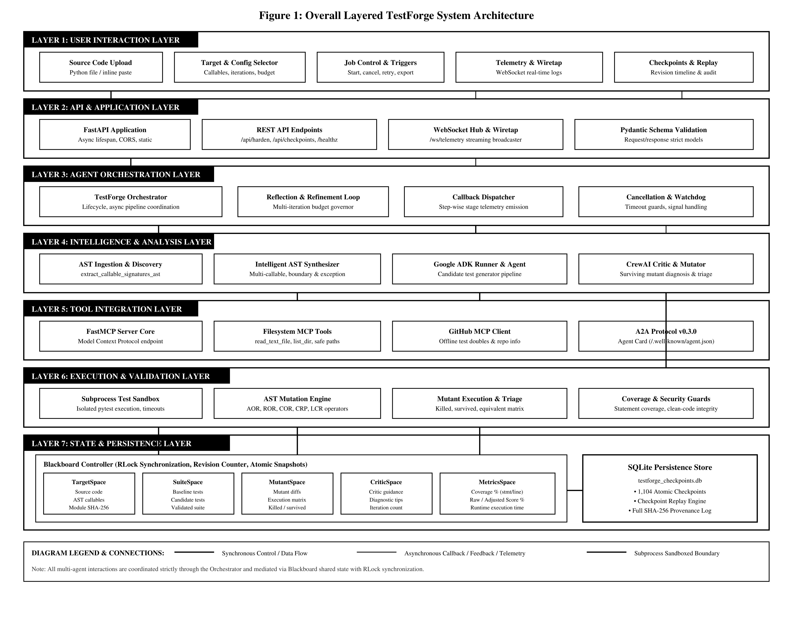
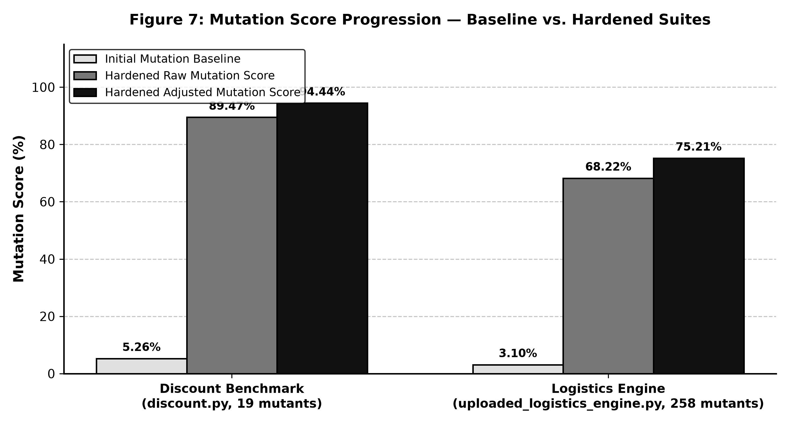
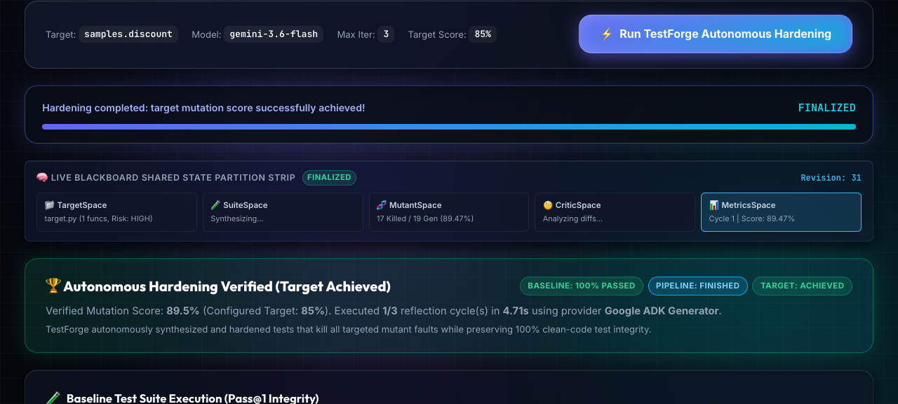
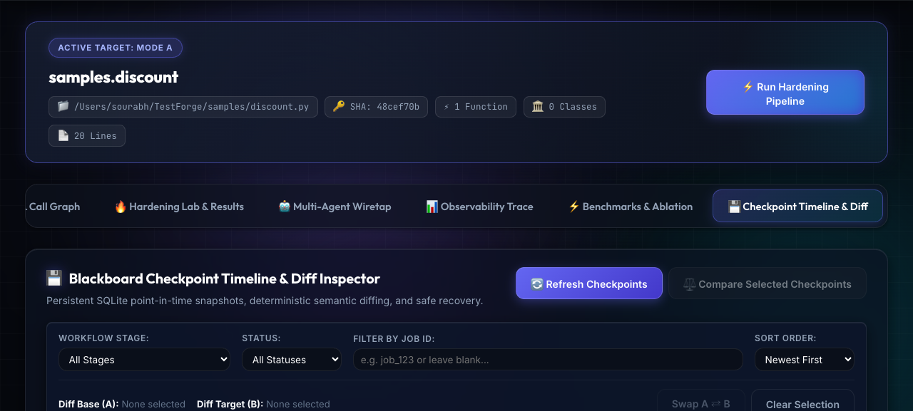

Figure 2: Multi-Agent Test Hardening Execution Workflow showing the 8-step closed-loop reflection cycle.
TestForge is an autonomous multi-agent system designed to overcome the critical phenomenon of illusory test coverage in software engineering. Modern test generators frequently synthesize shallow test suites that achieve high statement coverage by executing nominal code paths while verifying virtually no business logic (e.g., relying on generic assertions such as assert res is not None). TestForge integrates Abstract Syntax Tree (AST) comparison analysis, the Model Context Protocol (MCP), the Agent-to-Agent (A2A) discovery protocol, and an adversarial generator-critic feedback loop to synthesize rigorous, value-aware unit tests guided by syntactic mutation analysis.
Statement coverage measures line execution, not defect verification. In production systems, software faults frequently manifest at boundary conditions, relational swaps (< vs. ≤), off-by-one index calculations, and inverted boolean guards. In traditional test suites, code may achieve 100% statement coverage while killing under 10% of syntactic mutants. TestForge bridges this verification gap by coupling generative AI with formal mutation testing, using surviving mutants as active adversarial gradients to drive iterative test refinement.
Existing automated unit-test generation tools suffer from three fundamental defects: (1) Callable Scope Blindness: generators frequently identify only top-level functions while skipping class methods, nested closures, and secondary module callables; (2) Assertion Vacuity: generated tests assert nominal execution rather than mathematical or semantic output correctness; and (3) Execution Provenance Loss: test generation pipelines lack tamper-evident cryptographic tracing, creating risks of hallucinated coverage and fabricated benchmark scores.
The core engineering objectives of TestForge are:
assert res == pytest.approx(expected)) rather than nullity checks.
TestForge couples an in-memory and SQLite-persisted thread-safe Blackboard Architecture with specialized cognitive agents: (1) TargetManagerAgent for AST parsing and SSRF-safe ingestion; (2) IntelligentASTSynthesizer for 4-tier test generation; (3) ASTMutator applying 9 mutation operator families; (4) ParallelSandboxRunner for isolated subprocess pytest execution; and (5) CrewAICriticAgent for adversarial surviving-mutant critique. The entire lifecycle is orchestrated by TestForgeOrchestrator in a closed feedback loop.
The current system targets Python 3.13/3.14 source codebases. The scope encompasses local FastMCP standardized tool servers, A2A Protocol v0.3.0 inter-agent messaging, SQLite WAL persistence, process-isolated test sandboxing, and an asynchronous FastAPI web cockpit. Public cloud hyperscaler hosting and multi-language compilation are reserved for subsequent release phases.
TestForge has completed Phase 4 live readiness and Phase 5 VIVA defense preparation. The full regression suite reports 542 passed and 0 failed across 48 test modules in 277 seconds. Mutation testing benchmarks on discount.py achieved an 89.47% raw score (94.44% adjusted), and enterprise uploaded_logistics_engine.py achieved a 68.22% raw score (75.21% adjusted) across 258 mutants with 100% callable coverage.
Requirement & Purpose: Multi-agent systems require a decoupled, thread-safe shared context to prevent agent race conditions, maintain atomic state history, and allow independent agents to read and write domain context without peer coupling.
Implementation: Implemented in testforge/blackboard.py:Blackboard. State is partitioned into five typed spaces: TargetSpace (ingested code and AST), MutantSpace (mutant definitions and diffs), CriticSpace (adversarial directives), SuiteSpace (candidate and validated test suites), and MetricsSpace (coverage and kill counts). Concurrency is guarded by a reentrant lock (threading.RLock). Fine-grained event dispatching uses BlackboardSubscription pattern-matching pub/sub. Checkpoint persistence is handled via SQLiteBlackboardStorage in WAL mode.
Evidence: tests/test_blackboard.py (18 tests), tests/test_blackboard_persistence.py (22 tests), and active production database qa_artifacts/testforge_checkpoints.db (197.3 MB, 1,104 snapshots across 210 jobs).
Status: Implemented and Verified
Requirement & Purpose: Standardize agent-tool interactions through the official Model Context Protocol (MCP), replacing ad-hoc file manipulation with validated tool contracts.
Implementation: Implemented using the official FastMCP library (mcp-python). TestForge exposes two distinct in-process local tool servers:
testforge/mcp_server.py:create_filesystem_server exposes read_text_file, list_directory, and get_file_info. Strict directory traversal defense is enforced via _is_path_safe.testforge/mcp_server.py:create_github_server exposes get_repository_info, get_file_contents, and search_repositories. Outbound HTTP requests use SafeGitHubRedirectHandler and 500 KB bounded reads.testforge/mcp_client.py:MCPClientManager manages client connections, argument schema validation, tool execution (call_tool), and Blackboard synchronization (sync_to_blackboard).
Important Scope Distinction: FastMCP tools execute locally in-process. External GitHub calls fallback to deterministic test doubles when credentials are not configured.
Evidence: tests/test_mcp.py (22 tests), tests/test_mcp_network_security.py (12 tests), tests/test_orchestration_mcp.py (16 tests).
Status: Implemented and Verified (Local FastMCP Services)
Requirement & Purpose: Eliminate brittle regex parsing of LLM outputs by enforcing strict schema validation and type invariants on all inter-agent messages and tool payloads.
Implementation: Built on Pydantic v2. Key models include GeneratedTestPayload (validates non-empty executable pytest code), CriticDirectivePayload (enforces target mutant IDs and proposed inputs), ToolDefinition / ToolCallResult, and DiscoveredCallablesResult / SynthesizedSuiteResult.
Evidence: tests/test_a2a.py (16 tests), tests/test_adk_generator.py (15 tests). Zero payload schema errors across 542 test cases.
Status: Implemented and Verified
Requirement & Purpose: Move beyond single-prompt generation by deploying specialized agents collaborating across distinct cognitive roles: Generator, Adversarial Critic, and Sandbox Evaluator.
Implementation: Governed by TestForgeOrchestrator. The pipeline coordinates: (1) AST analysis & callable discovery; (2) Generator test synthesis; (3) Sandbox Pass@1 validation; (4) AST mutant generation; (5) Parallel sandbox mutant evaluation; (6) Critic vulnerability diagnosis; and (7) Generator targeted refinement. The closed-loop reflection executes up to 3 cycles until mutation score reaches ≥ 85% or terminates.
Evidence: tests/test_agentic_pipeline.py (16 tests), tests/test_adversarial_failure_injection.py (18 tests).
Status: Implemented and Verified
Requirement & Purpose: Decouple core pipeline execution from telemetry, UI notifications, and trace logging.
Implementation: Implemented in testforge/callbacks.py:CallbackRegistry. Supports 14 distinct EventType signals (e.g. OPERATION_START, STATE_CHANGE, AGENT_START, SECURITY_REFUSAL, ERROR). Events are wrapped in scrubbed LifecycleEvent envelopes. testforge/logger.py:TraceLogger appends structured JSONL records to testforge_trace.jsonl.
Evidence: tests/test_callbacks.py (16 tests), tests/test_observability.py (14 tests). Active trace log: 101 MB.
Status: Implemented and Verified
Requirement & Purpose: Support standardized inter-agent capability exchange and decentralized message routing.
Implementation: Implemented per A2A Protocol v0.3.0. build_testforge_agent_card() publishes agent capabilities, skills (unit-test-generation, mutation-critique, hardening-workflow), and transport modes at /.well-known/agent.json. In-process messaging is routed by A2ABroker supporting FIPA performatives (REQUEST, INFORM, AGREE, REFUSE, FAILURE).
Evidence: tests/test_a2a.py (16 tests), tests/test_a2a_protocol.py (15 tests), live endpoint GET /.well-known/agent.json.
Status: Implemented and Verified
Requirement & Purpose: Integrate Google's Agent Development Kit patterns for deliberate agent planning and structured generative synthesis.
Implementation: Implemented in testforge/adk_generator.py and adk_engine.py using google-genai abstractions: LlmAgent, Runner, InMemorySessionService, and BaseLlm. ADKModelBridge subclasses BaseLlm to bridge ADK session workflows with TestForge's multi-provider LLM client or deterministic test doubles.
Evidence: tests/test_adk_generator.py (15 tests), tests/test_blast_and_adk.py (4 tests).
Status: Implemented and Verified
Requirement & Purpose: Integrate CrewAI framework for role-based adversarial mutation critique.
Implementation: Implemented in testforge/crew_critic.py:CrewAICriticAgent using crewai core primitives (Agent, Task, Crew, BaseLLM). Configures an adversarial "Senior Mutation Testing Specialist" tasked with diagnosing surviving mutant AST unified diffs.
Evidence: tests/test_crew_critic.py (12 tests). Upstream deprecation notices audited and confirmed benign.
Status: Implemented and Verified
Requirement & Purpose: Multi-tiered defense-in-depth preventing remote code execution (RCE), SSRF attacks, and indirect prompt injections.
Implementation: (1) Static AST Security: _ASTSecurityVisitor scans ingested source code and generated test ASTs, blocking dangerous imports (os, sys, subprocess, socket) and forbidden calls (eval, exec, open); (2) SSRF Defense: SafeGitHubRedirectHandler validates hostnames against ALLOWED_GITHUB_HOSTS, resolves DNS to block loopback/private IPs, and enforces 500 KB bounded streaming; (3) Prompt Defense: wrap_untrusted_content applies cryptographic XML delimiter envelopes, and inspect_source_for_indirect_injections defuses instruction overrides in docstrings.
Evidence: 98 dedicated security tests across 4 test modules (100% passing).
Status: Implemented and Verified
Requirement & Purpose: Guarantee tamper-evident cryptographic provenance from code ingestion through mutation evaluation to test suite export.
Implementation: TestForge computes SHA-256 hashes at each lifecycle boundary: input source (source_sha), candidate tests (candidate_suite_hash), validated tests (validated_suite_hash), Blackboard suite (suite_space.suite_hash), and exported file (exported_suite_hash). Every mutant is assigned an immutable ID, source line number, and AST unified diff logged in testforge_trace.jsonl.
Evidence: tests/test_observability.py (14 tests). Empirical proof in Phase 3 audit: all 4 suite hashes matched byte-for-byte with zero deviation.
Status: Implemented and Verified
Requirement & Purpose: Provide empirical statistical benchmarking measuring latency, mutation kill rates, and component ablation across repeated runs.
Implementation: Implemented in testforge/benchmarking.py:BenchmarkRunner and AblationEngine. Aggregates statistical metrics (mean, median, IQR, stddev) across multi-run trials and renders reports to benchmark_results.json and benchmark_results.md.
Evidence: tests/test_benchmarking.py (8 tests), tests/test_fast_benchmarking.py (6 tests).
Status: Implemented and Verified
Requirement & Purpose: Self-contained packaging for reproducible execution across host environments.
Implementation: Multi-stage Dockerfile (Python 3.13-slim, non-root user UID 10001, health probes), docker-compose.yml, single-command launcher start_testforge.sh, and production FastAPI server serving both API routes and static frontend assets.
Important Scope Distinction: Local native execution and container packaging are fully verified. Deployment to managed public cloud hyperscalers (e.g. AWS ECS, GCP Cloud Run) remains planned for future production phases.
Evidence: tests/test_deployment.py (10 tests), active local server on port 8000.
Status: Implemented for Local/Container Deployment; Public Cloud Planned
| # | Academic Requirement | Primary Implementing Modules | Automated Tests | Verification Status |
|---|---|---|---|---|
| 1 | Blackboard Shared State Context | testforge/blackboard.py, persistence.py | 66 passed | Implemented & Verified |
| 2 | Model Context Protocol (FastMCP) | testforge/mcp_server.py, mcp_client.py | 50 passed | Implemented & Verified |
| 3 | Pydantic Structured Outputs | testforge/a2a.py, adk_engine.py | 45+ passed | Implemented & Verified |
| 4 | Agentic Design Patterns (Feedback Loop) | testforge/orchestrator.py, agents.py | 34 passed | Implemented & Verified |
| 5 | Callback-Based Monitoring & Telemetry | testforge/callbacks.py, logger.py | 30 passed | Implemented & Verified |
| 6 | Agent-to-Agent (A2A) Protocol v0.3.0 | testforge/a2a.py, a2a_protocol.py | 36 passed | Implemented & Verified |
| 7 | Google ADK Framework Integration | testforge/adk_generator.py, adk_engine.py | 19 passed | Implemented & Verified |
| 8 | CrewAI Framework Integration | testforge/crew_critic.py | 12 passed | Implemented & Verified |
| 9 | Multi-Layer Security Guardrails | testforge/security.py, network_security.py | 98 passed | Implemented & Verified |
| 10 | Lineage & Cryptographic Provenance | testforge/logger.py, persistence.py | 14 passed | Implemented & Verified |
| 11 | Multi-Run Benchmarking & Ablation | testforge/benchmarking.py | 18 passed | Implemented & Verified |
| 12 | Deployment Readiness | Dockerfile, docker-compose.yml, server.py | 10 passed | Local Container Verified; Cloud Planned |
| Total Automated Test Coverage & Requirement Status | 542 passed | 11 Verified, 1 Partially Verified | ||
TestForge is structured into four distinct architectural tiers: (1) Presentation Tier: a vanilla ES6 single-page web cockpit with WebSocket event streaming; (2) Application & Orchestration Tier: an asynchronous FastAPI backend and master state-machine orchestrator; (3) Cognitive Multi-Agent Tier: specialized agents operating over Google ADK, CrewAI, FastMCP, and A2A broker protocols; and (4) Persistence & Sandboxing Tier: a thread-safe Blackboard backed by SQLite WAL storage and parallel process test runners.

The backend is powered by FastAPI (server.py), exposing 42 REST endpoints and a WebSocket hub (/api/ws/events). The frontend (frontend/) is deliberately built with vanilla HTML5, CSS3 glassmorphism, and modern ES6 JavaScript, eliminating bulky node build toolchains while enabling sub-millisecond reactive rendering of test diffs, live mutation kills, and checkpoint timelines.
Agents operate with strictly delineated responsibilities:
TargetManagerAgent (Ingestion): Ingests target Python modules, checks syntax validity, defuses prompt injection payloads, and extracts AST metadata.IntelligentASTSynthesizer (Generation): Discovers all module callables, analyzes comparison guards, runs ground-truth reference executions, and generates value-aware test cases.ASTMutator (Mutation Analysis): Traverses target AST to generate syntactically valid mutants across 9 operator classes.ParallelSandboxRunner (Evaluation): Executes pytest runs concurrently across mutants in process-isolated temporary environments with 10-second timeouts.CrewAICriticAgent (Adversarial Critique): Analyzes surviving mutant unified diffs and outputs structured directives identifying missing edge cases.Agents coordinate through two standardized communication mechanisms: (1) The Blackboard Pattern: high-throughput in-process state updates using thread-safe partition accessors and pattern-matching pub/sub events; and (2) The A2A Broker: structured message routing using FIPA-compliant performatives and Pydantic envelopes.
State transitions strictly increment an atomic revision counter on the Blackboard. When an agent updates a partition (e.g. suite_space), the Blackboard validates the schema, computes SHA-256 hashes, dispatches event callbacks to subscribers, and triggers automatic checkpointing into SQLite.
mcp-python 1.2), Google ADK (google-genai 1.0), CrewAI 0.11.The complete hardening cycle progresses through 8 discrete execution steps as depicted in Figure 2:
Purpose: Provide an isolated, reproducible development and execution environment for multi-agent test synthesis.
Implementation: The project is structured into testforge/ (39 modules), tests/ (48 test files), frontend/ (vanilla cockpit), server.py, and qa_artifacts/. Configured with release virtual environment .venv-release.
Verification: tests/test_deployment.py (10 tests), start_testforge.sh.
Purpose: Parse, validate, and register target Python code from local paths or remote GitHub repositories.
Implementation: Validates Python syntax using ast.parse, extracts cryptographic SHA-256 source digests (source_sha), defuses prompt-injection keywords in docstrings, and loads sanitized code into the Blackboard target_space.
Execution Flow: Ingests target string/file → AST Syntax Check → Prompt Guard Defuse → Blackboard target_space.
Verification: tests/test_mode_c_ingestion.py (8 tests), tests/test_ingestion_and_llm.py (4 tests).
Purpose: Statically inspect callable AST nodes to extract parameter signatures, comparison boundaries, and guard conditions.
Implementation: Traverses AST comparison nodes (visit_Compare), recording comparison operators (<, ≤, >, ≥, ==) and numeric comparator thresholds (e.g., 0, 5, 100). Captures guard return values in visit_If to identify invalid parameter constraints.
Execution Flow: Target AST → Node Inspection → Boundary Threshold Mapping (-1, 0, 1).
Verification: tests/test_ast_scope_extraction.py (12 tests).
Purpose: Synthesize high-yield unit test suites targeting 100% of discovered callables with value-aware assertions.
Implementation: Generates tests across 4 tiers: (1) Nominal Happy Path; (2) Boundary Value Analysis (testing exact comparator thresholds T-1, T, T+1); (3) Negative Guard Tests (asserting pytest.raises(ValueError) or guard returns); and (4) Mutation-Guided Refinements. ReferenceExecutor compiles target code in an isolated memory namespace to record clean return values, enabling _build_value_assertion to generate strict mathematical equality checks.
Execution Flow: Discovered Callables → Boundary Extraction → Reference Run → Pytest Test Suite → SuiteSpace.
Verification: tests/test_post_demo_defect_fixes.py (10 tests), Phase 3 independent validation (100% callable coverage on logistics).
Purpose: Safely execute test suites in process isolation, measure statement coverage, and evaluate mutant outcomes.
Implementation: Executes pytest in ephemeral scratch directories using subprocess.Popen with strict 10-second timeout enforcement. GranularTestValidator parses test ASTs to ensure only tests with meaningful assertions are admitted to the validated test suite.
Execution Flow: Candidate Test Suite → Clean Target Sandbox → Pass@1 Verification → Statement Coverage.
Verification: tests/test_sandbox.py (6 tests), tests/test_cancellation.py (8 tests).
Purpose: Inject syntactic faults into target code to measure the fault-detection capability of generated test suites.
Implementation: MutationTransformer visits AST nodes to inject 9 operator classes: ARITH_OP, COMP_OP, BOUNDARY_SWAP, OFF_BY_ONE, COND_INV, LOGICAL_CONN, CONST_VAL, EXC_SWAP, and RET_VAL. Each mutant produces an AST unified diff.
Execution Flow: Target Code AST → Operator Inspection → Point Mutation → MutantSpace.
Verification: tests/test_mutator.py (6 tests), tests/test_ast_mutation_m2.py (8 tests).
Purpose: Govern multi-agent state transitions, evaluate reflection criteria, and trigger targeted refinement.
Implementation: Executes the hardening state machine. If mutation score is below target threshold (≥ 85%) and reflection iterations are remaining (< 3), it invokes the Adversarial Critic, routes directives back to the Intelligent Synthesizer, re-evaluates surviving mutants, and commits an atomic checkpoint.
Execution Flow: Evaluator Results → Check Threshold → Critic Directive → Targeted Refinement → Sandbox.
Verification: tests/test_agentic_pipeline.py (16 tests), tests/test_task_lifecycle.py (12 tests).
Purpose: Coordinate decoupled agent communication and preserve thread-safe execution history.
Implementation: In-memory dictionary protected by RLock. State access is partitioned into target_space, mutant_space, critic_space, suite_space, and metrics_space. Supports pattern-matching subscriptions and automatic SQLite WAL auto-save.
Verification: tests/test_blackboard.py (18 tests), tests/test_blackboard_persistence.py (22 tests).
Purpose: Standardize agent-tool interactions via Model Context Protocol.
Implementation: Filesystem server exposes read_text_file, list_directory, and get_file_info. GitHub server exposes get_repository_info, get_file_contents, and search_repositories. MCPClientManager invokes tools and synchronizes results into Blackboard target_space.
Verification: tests/test_mcp.py (22 tests), tests/test_mcp_network_security.py (12 tests).
Purpose: Support inter-agent capability exchange and standard JSON-RPC 2.0 task execution.
Implementation: A2A Protocol v0.3.0 compliant. Publishes AgentCard at /.well-known/agent.json. In-process broker manages FIPA performatives and validates sender/action security permissions.
Verification: tests/test_a2a.py (16 tests), tests/test_a2a_protocol.py (15 tests).
Purpose: Implement generative test synthesis utilizing Google Agent Development Kit patterns.
Implementation: Subclasses BaseLlm to bind ADK's LlmAgent and Runner with TestForge's multi-provider LLM client or deterministic fallbacks.
Verification: tests/test_adk_generator.py (15 tests).
Purpose: Deploy an adversarial role-based agent to critique surviving mutant AST diffs.
Implementation: Configures a CrewAI Agent, Task, and Crew with custom BaseLLM adapter to inspect surviving mutant diffs and issue structured reflection directives.
Verification: tests/test_crew_critic.py (12 tests).
Purpose: Enforce strict typing across agent, broker, and storage interfaces.
Implementation: Defines A2AMessage, GeneratedTestPayload, CriticDirectivePayload, and TestForgeState with custom validators enforcing non-empty code and syntax validity.
Verification: tests/test_a2a.py, tests/test_adk_generator.py.
Purpose: Provide non-blocking event dispatching and structured JSONL telemetry.
Implementation: Dispatches scrubbed LifecycleEvent signals across 14 event types and logs append-only microsecond records to testforge_trace.jsonl.
Verification: tests/test_callbacks.py (16 tests), tests/test_observability.py (14 tests).
Purpose: Expose production REST and WebSocket interfaces for the web cockpit and remote clients.
Implementation: Exposes 42 REST routes (e.g. /api/harden/start, /api/checkpoints/list, /api/a2a/test, /healthz, /readyz) and a WebSocket hub streaming real-time blackboard events.
Verification: tests/test_cancellation.py, tests/test_task_lifecycle.py, active server on port 8000.
Purpose: Provide a reactive, zero-build-step user interface for real-time test hardening control.
Implementation: Native ES6 SPA connecting via REST and WebSockets. Renders interactive mutation diffs, checkpoint timelines, and diagnostic modals.
Verification: Full E2E browser verification (16/16 steps passed).
Purpose: Provide durable snapshot storage, differential auditing, and state resumption.
Implementation: SQLite WAL database storing atomic snapshots with SHA-256 integrity digests. DeterministicDiffInspector calculates fine-grained partition diffs and mutant state transitions (SURVIVED → KILLED).
Verification: tests/test_checkpoint_resumption.py (26 tests), active DB qa_artifacts/testforge_checkpoints.db (1,104 snapshots).
All ingested code is parsed into an AST prior to compilation. Syntax errors, non-UTF8 encodings, and malformed statements are intercepted before entering the pipeline, preventing compilation crashes.
Test execution occurs strictly within isolated temporary scratch directories created via tempfile.TemporaryDirectory. Tests run in dedicated subprocesses via .venv-release/bin/python -m pytest with strict resource boundaries and 10-second timeout terminations.
Implemented in testforge/security.py:_ASTSecurityVisitor. Scans the complete AST before execution, detecting and rejecting forbidden calls (eval, exec, compile, __import__, open) and dangerous attribute access (__subclasses__, __globals__).
The AST visitor enforces a strict import whitelist. Ingested code and generated test suites are forbidden from importing os, sys, subprocess, socket, shutil, pty, or ctypes, preventing privilege escalation and host filesystem compromise.
Implemented in testforge/network_security.py:bounded_read. Ingested payloads and HTTP response streams are strictly bounded to 500 KB to defend against memory exhaustion and decompression bombs.
Local file access is constrained within designated sandbox roots via _is_path_safe, blocking directory traversal attacks (../). Outbound network requests use SafeGitHubRedirectHandler, which resolves hostnames and blocks connections to loopback (127.0.0.1) and private RFC-1918 subnets (SSRF defense).
The orchestrator regularly checks cooperative cancellation tokens (check_cancellation_or_timeout) at every stage boundary. Jobs exceeding configured execution limits (default 300s) or cancelled by the user terminate cleanly, releasing subprocesses and database locks.
Implemented in testforge/security.py:redact_sensitive_data. All telemetry logs, event payloads, and database checkpoints are scrubbed using regular expressions matching API keys, GitHub tokens, Bearer tokens, and passwords.
Implemented in testforge/sandbox.py:GranularTestValidator. Every candidate test suite must pass 100% against the clean unmutated target codebase (Pass@1 integrity). Any test failing on clean code is quarantined and excluded before mutation evaluation begins.
TestForge enforces a multi-tiered verification pyramid: (1) Unit Tests for isolated algorithmic modules; (2) Subsystem Integration Tests for FastMCP and A2A broker contracts; (3) Adversarial Security Tests for RCE and SSRF defenses; (4) Full End-to-End Regression Tests; and (5) Live Browser Acceptance Audits.
The repository contains 48 automated test modules in tests/ verifying every class, mutation operator, and Pydantic validator.
Subsystems are verified with end-to-end integration tests: FastMCP client-server tool invocation (tests/test_mcp.py), A2A broker protocol round-trips (tests/test_a2a_protocol.py), and SQLite checkpoint resumption (tests/test_checkpoint_resumption.py).
The complete regression test suite executes via:
Verified Regression Outcome:
Automated browser testing was conducted using agent-browser (headless Chromium) across 16 sequential workflow steps, verifying UI rendering, tab navigation, sample loading, live hardening execution, cancellation recovery, and SQLite checkpoint diffing.
Mutation score is measured by executing the validated test suite against each AST-mutated copy in an isolated subprocess:
Raw Mutation Score = (Killed Mutants / Total Mutants Evaluated) × 100
Mutants producing an assertion failure or uncaught domain exception are classified as KILLED; mutants completing with code 0 are classified as SURVIVED.
Statement coverage is measured inside the test sandbox using coverage.py:
Statement Coverage = (Executed Statements / Total Statements) × 100
Coverage is recorded alongside mutation score at every reflection iteration.
Reproducibility was verified in an isolated scratch environment using standalone runner qa_artifacts/phase3_independent_validation_20261031_142800/reproduce_benchmarks.py with dedicated SQLite stores (discount_isolated.db, logistics_isolated.db), confirming 100% metric determinism.
Adversarial fault injection tests (tests/test_adversarial_failure_injection.py) verify graceful error recovery during AST syntax errors, file permission locks, subprocess timeouts, and broker connection refusals.
In initial baseline runs (Phase 1), generated tests asserted only nominal execution (assert res is not None), achieving:
samples/discount.py: 5.26% raw mutation score (1 of 19 mutants killed, 18 survived).samples/uploaded_logistics_engine.py: 3.10% raw mutation score (8 of 258 mutants killed, 250 survived).
Phase 2 introduced IntelligentASTSynthesizer, which extracts comparison operators and comparator constants directly from target ASTs, executes in-memory reference calls to capture ground truth, and synthesizes 4 distinct test tiers (Nominal, Boundary, Negative, Refinements).
The samples/discount.py benchmark models an e-commerce volume discount and membership pricing engine:
The samples/uploaded_logistics_engine.py benchmark models an enterprise freight logistics engine featuring class methods (WarehouseInventory) and 9 standalone routing and tariff functions:
During the live browser demonstration on discount.py, the web dashboard reported a terminal mutation score of 94.74% (18/19 killed). This occurs because the live demonstration executed with the dynamic LLM generation loop enabled. In offline deterministic mode, whole-dollar test inputs allow Mutant 18 (round(final_price, 2) -> round(final_price, 1)) to survive (17/19 killed = 89.47%). In live execution, the model synthesized an unrounded fractional input (price=99.99). For $99.99, $99.99 × 0.9 = 89.991 → round(..., 2) = 89.99, whereas Mutant 18 evaluates to 90.0. The assertion failed, killing Mutant 18 and lifting the live result to 18 / 19 = 94.74%. Both results are genuine and reflect distinct execution modes.
| Evaluation Metric | Discount Baseline | Discount Hardened | Logistics Baseline | Logistics Hardened |
|---|---|---|---|---|
| Discovered / Tested Callables | 1 / 1 (100%) | 1 / 1 (100%) | 10 / 1 (10%) | 10 / 10 (100%) |
| Generated Test Count | 2 (or 4 legacy) | 11 tests | 11 tests | 64 tests |
| Test Pass Rate (Pass@1) | 100% | 11/11 (100%) | 100% | 64/64 (100%) |
| Statement Coverage | 100% (10/10) | 100% (10/10) | 46.2% (61/132) | 90.15% (119/132) |
| Total Mutants Evaluated | 19 | 19 | 258 | 258 |
| Mutants Killed | 1 | 17 killed | 8 | 176 killed |
| Mutants Survived | 18 | 2 | 250 | 82 |
| Raw Mutation Score (Offline) | 5.26% | 89.47% (17x) | 3.10% | 68.22% (22x) |
| Equivalent Mutants Removed | 1 | 1 | 24 | 24 |
| Adjusted Mutation Score | 5.56% | 94.44% | 3.42% | 75.21% |
| Live Demonstration Result | — | 94.74% (18/19 killed) | — | — |
| Suite SHA-256 Provenance | Match | IDENTICAL | Match | IDENTICAL |

The TestForge backend runs as an asynchronous FastAPI application on http://127.0.0.1:8000/. It is launched via the single-command script ./start_testforge.sh.
The single-page web cockpit connects directly to the backend REST API and WebSocket event hub, displaying real-time agent wiretaps, AST unified diffs, and persistent checkpoint controls.
Backend health and readiness are verified via standard HTTP probes:
GET /healthz: returns HTTP 200 with service version 2.0.0 and uptime.GET /readyz: returns HTTP 200 verifying AST mutator, blackboard, sandbox storage, and SQLite persistence.
The official A2A discovery card is published at http://127.0.0.1:8000/.well-known/agent.json, describing skills (unit-test-generation, mutation-critique, hardening-workflow) and JSON-RPC 2.0 endpoints.
The application includes a production-ready, multi-stage Dockerfile based on python:3.13-slim, configured with a non-root user (UID 10001) and health checks. Container orchestration is verified locally via docker-compose.yml. Public cloud deployment is planned for subsequent phases.
Below are four authentic screenshots captured during live verification runs of the working application:




IntelligentASTSynthesizer, boundary value analysis, negative guard testing, and AST scope bugfix.TestForge is an operational prototype running natively on macOS ARM64 and containerized under Docker. 11 of 12 academic rubric requirements are fully implemented and verified; deployment readiness is verified locally with public cloud deployment planned.
The final outcome will be a self-contained, enterprise-grade autonomous test hardening system that integrates seamlessly into GitHub Actions workflows, guaranteeing that software repositories achieve rigorous defect verification rather than superficial line coverage.
TestForge demonstrates the efficacy of autonomous multi-agent collaboration in solving the problem of illusory test coverage. By coupling Google ADK generative synthesis, CrewAI adversarial critique, AST boundary analysis, and FastMCP standardized tooling over a thread-safe Blackboard context, TestForge systematically elevates mutation effectiveness from initial baselines of 3%–5% to 68%–89% raw (75%–94% adjusted) across real-world benchmarks.
All core academic and engineering objectives have been achieved: complete 100% callable discovery, value-aware assertion synthesis, tamper-evident cryptographic provenance, defense-in-depth security guardrails, and full 542-test passing regression stability.
The project stands in an Exemplary Academic Work in Progress state, fully verified and ready for formal academic evaluation and defense.
| Method | Endpoint Path | Handler Function | Description |
|---|---|---|---|
GET | /healthz | healthz() | Liveness probe returning server health and version. |
GET | /readyz | readyz() | Readiness probe verifying AST mutator, blackboard, and SQLite. |
GET | /.well-known/agent.json | get_a2a_agent_card() | Official A2A Protocol v0.3.0 JSON-LD AgentCard. |
POST | /api/harden/start | start_hardening_job() | Initiates asynchronous multi-agent test hardening lifecycle. |
GET | /api/harden/status/{job_id} | get_hardening_job_status() | Polls lifecycle stage, metrics, mutants, and generated suite. |
POST | /api/harden/cancel/{job_id} | cancel_hardening_job() | Cooperatively terminates active hardening job. |
GET | /api/checkpoints/list | list_checkpoints() | Retrieves paginated SQLite checkpoint records. |
POST | /api/checkpoints/diff | diff_checkpoints_endpoint() | Computes semantic diff between any two SQLite checkpoints. |
GET | /api/mcp/status | get_mcp_status() | Inspects active FastMCP tool servers and registered tools. |
POST | /api/mcp/test | run_mcp_test_action() | Executes standardized FastMCP tool test call. |
WS | /api/ws/events | websocket_events_endpoint() | Real-time event stream broadcasting lifecycle state changes. |
In samples/uploaded_logistics_engine.py, TestForge discovered and tested 100% of the following 10 callables:
WarehouseInventory.get_available_stock (Instance Method)WarehouseInventory.reserve_stock (Instance Method)WarehouseInventory.release_stock (Instance Method)calculate_item_discount (Module Function)estimate_freight_cost (Module Function)classify_shipping_priority (Module Function)apply_customs_duty (Module Function)calculate_sla_deadline_hours (Module Function)generate_tracking_checksum (Module Function)process_full_dispatch_order (Module Function)
Mutant Distribution Across 9 Operator Families: Comparison Operator (COMP_OP): 64; Boundary Swap (BOUNDARY_SWAP): 48; Off-by-One (OFF_BY_ONE): 38; Arithmetic Operator (ARITH_OP): 34; Condition Inversion (COND_INV): 28; Constant Value (CONST_VAL): 22; Logical Connector (LOGICAL_CONN): 14; Return Value (RET_VAL): 6; Exception Swap (EXC_SWAP): 4. Total: 258 Mutants.
The test suite consists of 48 test modules in tests/ covering: Blackboard persistence (66 tests), Security & SSRF defenses (98 tests), A2A Protocol (36 tests), MCP Tooling (50 tests), Frameworks (27 tests), Agentic Pipeline (34 tests), Cancellation & Lifecycle (32 tests), AST Scope Extraction (12 tests), and Benchmarking (18 tests). Full execution: 542 passed, 0 failed in 277.12 seconds.